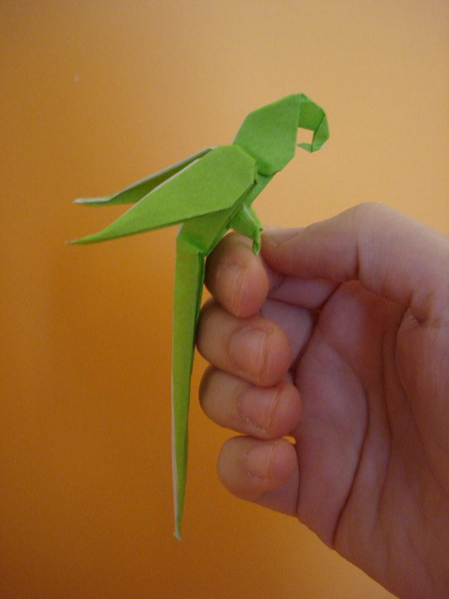

Орігамі – моє улюблене захоплення
Моє улюблене захоплення це мабуть орігамі. Орігамі — це стародавнє японське мистецтво складання фігурок з паперу, що походить від слів "орі" (складати) та "камі" (папір), і передбачає створення складних форм за допомогою послідовних згинів та складок, без використання клею та ножиць (у класичному варіанті). Це знижує рівень стресу, розслабляє після важкого дня та може бути цікавою частиною декору у будинку.
